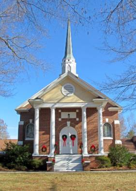
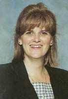
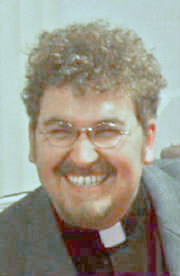
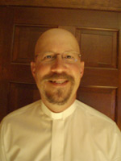
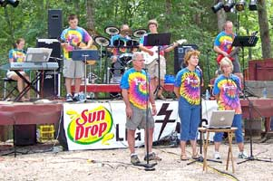
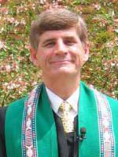
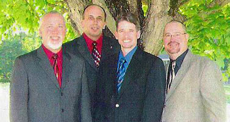

2007 Revival Stony Hill

Sunday, Monday, Tuesday, August 5-7 at 7:00 pm each night
28996 Stony Hill Road (Off Valley Drive)
Albemarle, NC 28001
Tuesday, August 7, Covered Dish Supper at 6pm.
Mary S. Lautensleger, Pastor

Homecoming Sunday, August 5 at 10:45 am
The Rev. Leslee Wray
A native of Ohio, Leslee is a graduate of Mars Hill College and Emory University.
She serves as chaplain of Stanly County Hospice and The Lutheran Home.
She has pastored several churches in our area, including Stony Hill, Locust,
Oakboro, Love's Grove, and Central in Monroe.
Leslee is married to a Presbyterian pastor, and they have two daughters.
Join us for a covered dish dinner on the grounds immediately
following the morning worship service

Sunday, August 5 at 7:00 pm
The Rev. Curtis Goforth
Curtis is the pastor of Badin and Richfield United Methodist Churches. He is a 2000 graduate of Berea College where he received a B.A. in Religion and Philosophy with a double minor in Hebrew and Archaeology.
He is also a 2004 graduate from Duke University Divinity School where he received his Master of Divinity Degree. Curtis began serving the Badin-Richfield Charge in June of 2005 after a one-year term in The Methodist Church of Great Britain.

Monday, August 6 at 7:00 pm
The Rev. Tony Allen
Tony is a native of Albemarle and is pastor of New London United Methodist Church. He is a graduate of UNC Charlotte and Duke Divinity School. Tony is a spiritual director for the Emmanuel Emmaus Community.
Tony and Erin have four daughters. A special interest is spiritual formation. He also serves as a spiritual director in private practice. In his spare time, Tony enjoys motorcycling, boating, and fishing.
Special music will be provided by the praise team from Center United Methodist Church in Concord.

Monday, August 6
The Praise Team
Special music will be provided by the praise team from Center United Methodist Church in Concord.

Tuesday, August 7 at 7:00 pm
Rev. Dr. Stephen W. Pillsbury
Pillsbury is the pastor of Stallings UMC and the district program ministry chairperson. He is author and presenter of "Christ's Circle," a district lay leadership mentoring model of ministry for our conference. As a motivational speaker, he has presented aspects of this program throughout our conference.
He is published in many scientific journals and was a science teacher and adjunct professor before his call to ministry. Steve is a graduate of Hunter College, Brooklyn College, Duke Divinity School, and Hood Theological Seminary.

Tuesday, August 7
The Fathers Four
The Fathers Four have accepted our invitation.
They are planning to share their gospel music and singing with all our
members and visitors on the evening of August 7th. Please let everyone
know that this very talented group from Thomasville, NC
will be coming to Stony Hill UMC Revival.